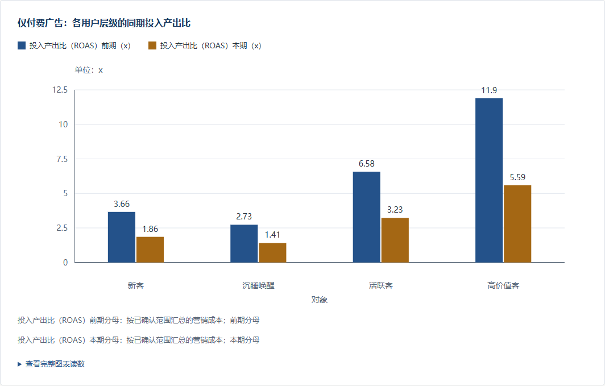

先发现变化
付费广告的投入产出比，从去年同月的5.84降到2.87。收入下降的同时，营销投入增加，需要继续排查。
打开对应分析章节 ↗不用先准备自己的数据。跟着示例，看看 AI 怎样发现变化、补查依据，再把下一步行动讲清楚。
开始跟做先读这次的完整报告 ↗完全合成的渠道经营案例 · 10万行 · 18个月
准备材料 → 选择开始方式 → 查看报告
建议在电脑上跟做；本页提供教程，分析在你自己的 AI 工具中完成。
进一步按用户层级核查，发现每一层都在下降。报告据此提出复核方向，并说明尚不能确认的根因。

准备一个能加载 Skill、读取表格并运行 Python 的 AI 工具，例如支持本地执行的 Codex 或 Claude Code。已有可用工具并加载了 sheet-to-report，就直接下载下方练习表。
平台上的展示页负责介绍和下载，分析需在支持执行的 AI 工具中完成。例如，你可以在支持本地执行的 Codex 或 Claude Code 中加载本 Skill。以下安装入口来自项目现有说明；不同工具的菜单和授权方式可能不同。
若电脑已有 Node.js，在终端运行下面的命令，按安装器提示选择你实际使用的工具。命令由兼容安装器执行，不是发给模型的分析话术。
npx skills add https://github.com/majichuan/sheet-to-report --skill sheet-to-report
在 Claude Code 中依次执行：
/plugin marketplace add majichuan/sheet-to-report /plugin install sheet-to-report@majichuan-skills
这是作者维护的 GitHub 插件入口，不代表官方社区目录收录。
也可按所用工具的说明导入 v0.2.5 发布包，保持整个 Skill 目录完整。HTML 需要 Python 3.10+、pandas、NumPy 和 openpyxl；让 AI 按 安装与环境说明检查并解释缺项。PPT 的额外依赖到可选阶段再检查。
100,000条模拟记录 · 11个字段 · Excel约5.1 MB
包含日期、渠道、区域、品类、用户层级，以及收入、订单、访问、营销成本和退款数据。
Excel不方便读取时，可使用同内容 CSV（约7.4 MB）。选择其中一份上传即可。
建议把配套数据说明（TXT）也交给 AI，帮助它理解指标。无需自己编写；不方便上传时，可在下一步按需复制说明。
准备完成的信号：AI能找到 sheet-to-report，并能读取你上传的表格。
两种方式都能得到 HTML 分析报告，选一种即可。想先看效果，选“直接分析”；想先调整分析范围，选“先确认方案”。
指令只需讲清：分析哪份表、给谁看、看什么、直接分析还是先确认。不必照抄技术规则；两条示例都没有预设结论。
已上传配套说明时，可提醒AI查看附件。不方便上传时，把下面的说明复制给AI；真实业务应使用你自己的定义。
这份练习表每行是一条模拟经营汇总记录，不代表单个订单或用户。收入为退款前金额；退款金额率=退款金额合计/收入合计，转化率=订单数合计/访问量合计，投入产出比=收入合计/营销成本合计。比例用汇总后的分子除以分母，分母为零时单独说明。零订单记录的营销成本仍计入，投入产出比不等于利润率。退款与同条记录关联，没有实际退款发生日期。表中没有用户ID，不能计算真实留存或去重人数。
分析可能经历检查数据、计算、核查和生成报告，耗时取决于模型与环境。这里是操作示例，实际提问和输出以你使用的AI工具为准。
先打开你自己生成的报告：点击 AI 对话中的 HTML 附件或预览入口；不支持预览时，保存到电脑后用浏览器打开，可离线阅读。
下面用我们的示例报告演示如何阅读。你自己的报告不必与示例排版完全一致，重点看能否讲清变化、依据和下一步。
付费广告的投入产出比，从去年同月的5.84降到2.87。收入下降的同时，营销投入增加，需要继续排查。
打开对应分析章节 ↗各层级内部也在下降，因此不能只用人群占比变化解释。不过，表里没有广告素材、归因窗口和完整成本，不能直接判定具体故障或是否亏损。
先做：追加预算前，核对成本归属和收入归因，按广告计划、人群补查转化变化。
看什么：在相同口径下，转化率与投入效率是否改善，退款是否恶化。
何时调整：验证期间若效率继续恶化，暂停新增实验预算并复核。
此报告由同一份练习表生成，基于v0.2.5，并于2026年9月完成复验。不同模型可能产生不同的章节和措辞；重点比较口径、数字、依据及判断是否成立，不要求照抄示例答案。
你能在自己的报告中找到一项发现、对应依据和下一步建议，就完成了这次入门体验。
HTML已经是一份完整成果。要面对团队讲述时，再让AI沿用这次分析制作可编辑PPT。
请把刚才的 HTML 报告做成可编辑 PPT，保留原有数据和结论。先给我看主题预览，优先推荐清晰商务，等我选定后再生成完整 PPT。
没有其他偏好时，可回复：“选择清晰商务，继续生成完整可编辑PPT。”标准PPT还需要Node.js 18+及python-pptx等依赖；让AI先检查，已经生成的HTML应继续保留。若当前工具无法提供真实预览，让AI说明可用的查看方式；完成后领取可编辑PPT文件。
SlideViber需另行安装。美化时沿用相同分析和已选主题，另外保存美化稿，标准稿保留。
请用 SlideViber 美化刚才的 PPT，保留原有数据、结论和主题，另存一份美化版。未安装的话，请先告诉我怎么安装。
对照页是同源数据的既有演示稿；本次教程复验产物为HTML，未为这次新报告另制PPT。预览取决于宿主的实际渲染能力，网页示意不能代替最终PPT页面。
替换汇报对象、时间范围和业务问题，就能从练习过渡到自己的工作。先使用一张结构清晰的 Excel 或 CSV。
请用 sheet-to-report 分析这份表，面向【汇报对象】复盘【时间范围】，重点看【业务问题】。直接生成 HTML，口径不清楚的地方先问我。
想先确认方案？把最后一句换成：“先给我简短分析方案，等我确认后再生成 HTML。”
练习表的退款和成本定义不应直接套用到真实业务。上传前了解所用AI工具的数据处理规则，按实际需要脱敏。
可以问：“现在进行到哪一步？还需要我提供什么？”先看AI是否正在执行或等待你确认。若已报错，让AI说明卡在哪一步、下一步怎么处理，并保留已生成的文件；无需反复发送整段首次指令。
确认Skill已经加载，上传的是Excel或CSV文件而不是网页地址。让AI说明缺少哪项能力。需要安装时返回准备步骤。
先按所用AI平台的提示检查模型访问权限。这类问题发生在宿主侧，不需要为此重做表格。平台实验场不是本教程的必经步骤。
可以回复：“请用这份表的字段解释两种口径有什么差别，以及会影响什么结论。”本练习可查看配套数据说明；真实业务以你的实际定义为准。
请AI重新提供实际文件或可用附件。HTML保存后可用浏览器打开；PPTX可用PowerPoint或WPS打开。当前宿主支持真实渲染时，可请AI直接展示页面图片；不能渲染时应明确说明。